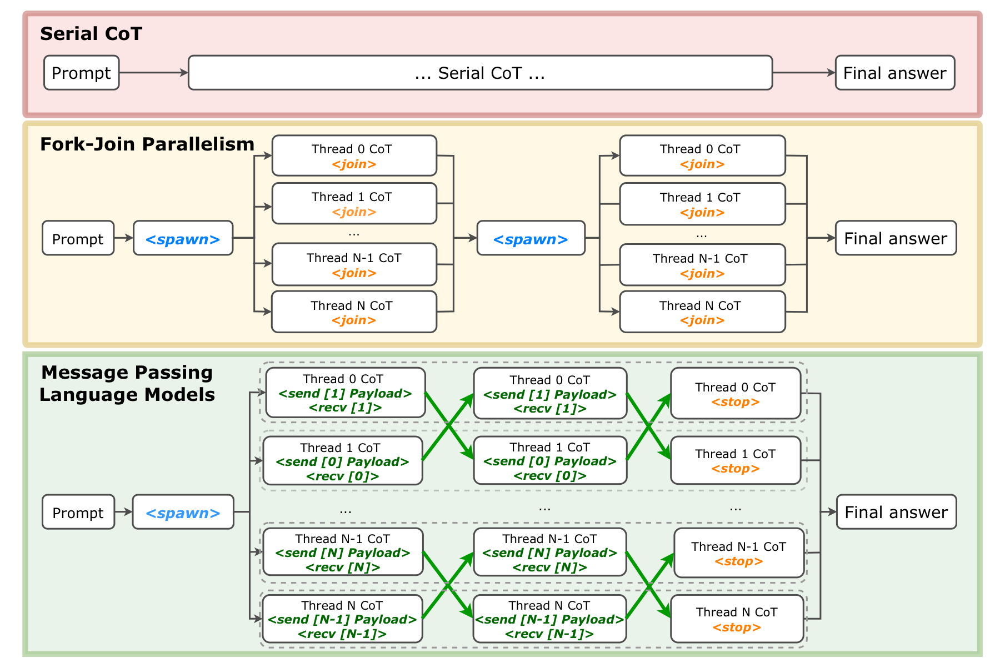
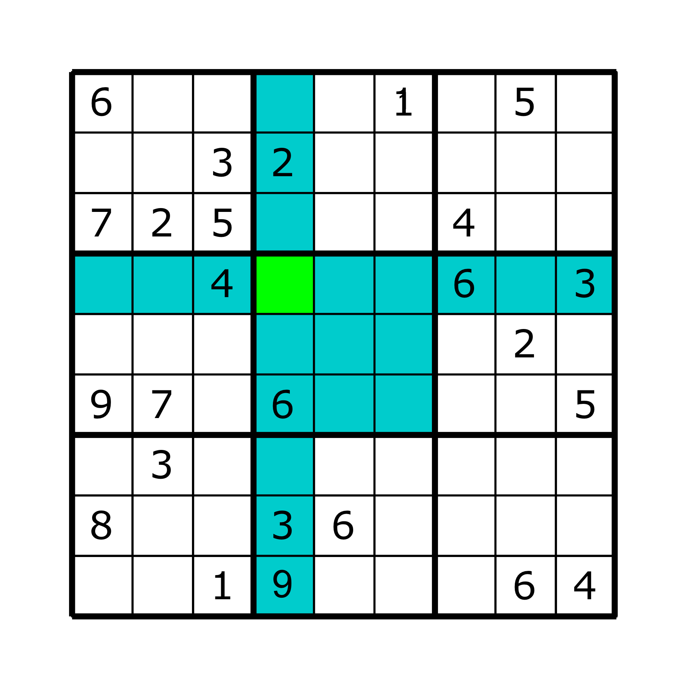
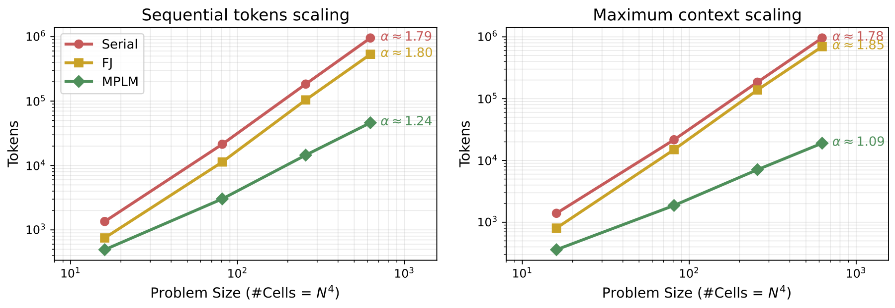
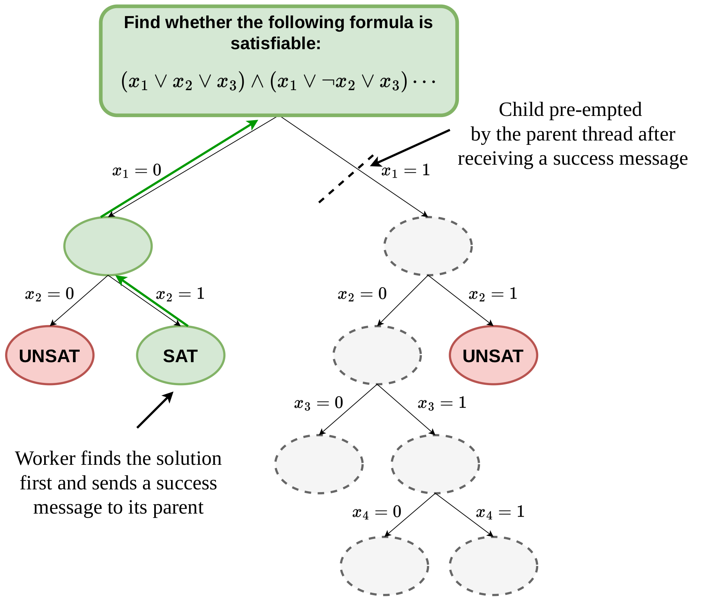
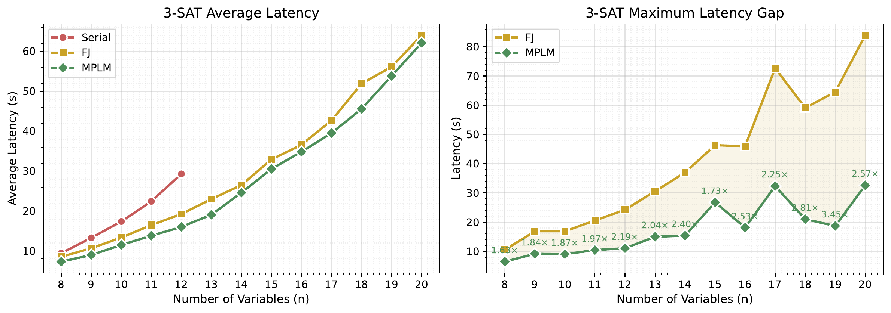

For reasoning, generating long Chains-of-Thought (CoTs) is a computational bottleneck. Recent parallel methods use fork-and-join (FJ) primitives to divide work across multiple LLM threads, but in this paradigm threads are transient and all coordination is centralized: every piece of information must flow back through a single parent thread, creating communication bottlenecks and implicit serialization. Conceptually, this is like an organization where every routine decision must be routed through a single CEO.
In response, we introduce Message Passing Language Models (MPLMs): a framework where a single model decomposes a task into persistent, semi-independent threads that spawn other threads and communicate point-to-point using send and recv primitives. MPLMs gain efficiency through two key mechanisms: (1) reduced communication cost, by avoiding redundant context sharing, and (2) preemption, letting threads terminate early on partial information from peers. Crucially, the model itself learns when, with whom, and what to communicate — the protocol is learned, not hard-coded. We validate MPLMs across three testbeds: Sudoku (sparse local communication), 3-SAT (asynchronous preemption), and long-context QA (LongBench-v2).

Top: Serial CoT generates one monolithic trace. Middle: Fork-Join spawns transient threads synchronized via global joins. Bottom: In MPLMs, concurrently decoded threads communicate directly through send/recv and maintain a persistent context, enabling fine-grained coordination throughout inference.
Consider a task that runs for $T$ iterations. In each iteration, $N$ workers run in parallel; each produces up to $W$ tokens and needs information from at most $k$ neighbors via messages of size $M$. Since context length is the fundamental bottleneck for scaling inference, we compare the maximum context each paradigm needs.
MPLMs use a small set of directives—special tagged strings the model generates—to control execution. These play roles analogous to process creation, communication, synchronization, and termination in message-passing systems (MPI). A lightweight controller, layered on top of a standard batched inference engine (e.g. vLLM / SGLang), interprets them while leaving token sampling and KV-cache management unchanged.
| Directive | Description | Syntax |
|---|---|---|
| Spawn |
Creates new LLM threads with the given IDs and the prompt. |
<spawn[id1,id2,…,idN]>prompt</spawn>
|
| Send |
Sends a message to one or more specified LLM threads. |
<send[id1,id2,…,idN]>message</send>
|
| Receive |
Blocks execution until messages are received from the specified threads. |
<recv[id1,id2,…,idN]>
|
| Stop |
Terminates execution of the current LLM thread permanently. |
<stop>
|
For Sudoku and SAT we generate CoT data with a simple program and use Supervised Fine-Tuning (SFT) on Qwen3-0.6B-Base (each run cost under 48 H100-hours). For long-context QA, large models follow the protocol zero-shot from prompting alone — no training required.
We assign one worker to each cell ($N^4$ workers for an $N^2\times N^2$ grid). A worker that finds a unique value sends it only to its neighbors (cells sharing a row, column, or sub-grid) and stops; otherwise it waits to receive more information. This sparse, local communication is exactly the structure that makes MPLMs context-efficient.

The worker for the green cell only communicates with its blue neighbors — not the whole grid.
| Method | n=2 (4×4) | n=3 (9×9) | n=4 (16×16) | n=5 (25×25) |
|---|---|---|---|---|
| MPLM (ours) | 2.105s (100%) | 14.939s (100%) | 117.684s (92%) | 1017.263s (72%) |
| FJ | 2.940s (100%) | 59.562s (93%) | ✗ | ✗ |
| Serial | 4.545s (99%) | ✗ | ✗ | ✗ |
| DeepSeek R1 | 144.271s (90%) | 765.982s (0%) | 597.939s (0%) | 431.751s (0%) |
| GPT-5 Pro | 100% | 100% | 45% | 20% |
Avg. latency and accuracy across grid sizes. ✕ = infeasible to train under context/compute limits.

Scaling on Sudoku. Sequential tokens (left) and maximum context (right) vs. problem size on log–log axes. MPLM has a much lower scaling exponent (α ≈ 1.1–1.2) than Monolithic CoT and Fork-Join (α ≈ 1.8), enabling efficient reasoning on far larger puzzles.
The improved scaling translates into qualitatively new capability. DeepSeek-R1 already fails on standard $9\times 9$ puzzles, and GPT-5 Pro (no tools) solves only $1/10$ of $25\times 25$ puzzles — whereas a tiny fine-tuned MPLM solves 72%. This is not a head-to-head comparison, but an illustration of what structured parallelism can unlock that monolithic CoT cannot, regardless of scale.
Where Sudoku highlights communication efficiency, SAT highlights asynchronous message passing and preemption. Following a distributed DPLL search, each worker branches on a variable and spawns two children. The moment any branch finds a satisfying assignment, it sends a success message to its parent, which immediately preempts the remaining sibling sub-trees. This is impossible under Fork-Join, where the parent can only aggregate after all workers finish — so its latency is set by the last leaf rather than the first solution.

A worker finds a solution and reports SAT to its parent; the parent then cancels the still-running
sibling sub-tree, avoiding wasted computation.

Left: average latency over 100 test problems per variable count — MPLM is fastest at every size, while Serial exhausts context past 12 variables. Right: the maximum FJ–MPLM latency gap per variable count — gains are largest on highly unbalanced search trees, reaching up to ~2.6× over Fork-Join.
Beyond controlled tasks, we test whether prompted large models can already use the MPLM protocol — with no fine-tuning. On LongBench-v2 (503 multiple-choice questions, contexts of 8K–2M words), the parent spawns one worker per context chunk; each worker summarizes its chunk and the parent then selectively and iteratively queries only the relevant workers. Because workers are persistent, the parent can re-query the same region for finer detail without reloading it (aided by prefix caching) — unlike the transient, stateless workers of the Recursive Language Model (RLM) fork-join baseline.
| Model | Method | Avg. Accuracy | Avg. Latency |
|---|---|---|---|
| Qwen3-30B-A3B | RLM (fork-join) | 29.7% | 105.7s |
| MPLM (ours) | 37.8% | 61.3s | |
| Qwen3.6-35B-A3B | RLM (fork-join) | 46.7% | 223.5s |
| MPLM (ours) | 46.5% | 102.2s |
Averages over all LongBench-v2 partitions, both models evaluated without fine-tuning. MPLM substantially reduces latency for both models while improving accuracy on the smaller model and matching it on the larger one.
MPLMs let a single LLM dynamically create threads and communicate point-to-point, breaking complex tasks into sub-problems that coordinate only when necessary — much like a real organization rather than a single CEO. Across Sudoku, SAT, and long-context QA, this decentralized design requires less context and is more efficient at inference time than serial CoT and centralized fork-join.
The most promising direction ahead is generating message-passing CoT data to train models on open-ended domains such as code generation, and extending the primitive set (e.g. broadcast and all-gather) for richer coordination.
@article{arora2026mplm,
title={Message Passing Enables Efficient Reasoning},
author={Liu, Xuecheng and Arora, Daman and Swamy, Gokul and Zanette, Andrea},
journal={arXiv preprint},
year={2026}
}If you're interested in more work from the lab, check out these papers: